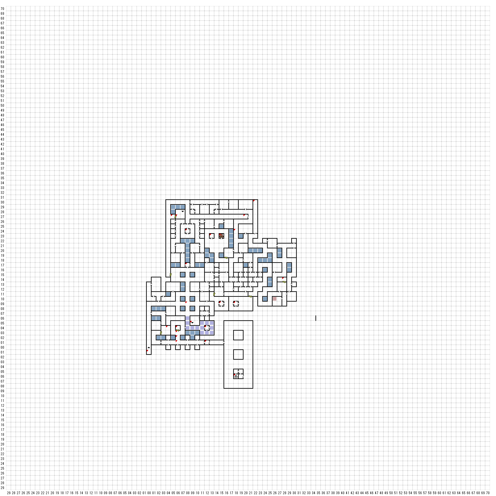

【 東：0，南：1 】
壁には次のように書かれている
いつの日にか MAELSTORM を統べんがため、
その中心を探し求める者のみ入られよ
【 東：4，北：4 】
床の上には、ボロボロになった、骨と、鎖が、
散乱していた。哀れな戦士の魂に安らぎあれ！
（探すと何か見つかる）BAG OF TOKENS
骨がカタカタ揺れ始めた！
エンカウント
【 東：5，北：27 】
壁には銀の扉があった
【 東：6，北：27 】
SILVER KEYで開けて入る
【 東：6，北：4 】
(1)
大きなモーターには、相互に 連結した
部品がつながっており、そのそれぞれには
レバーがついている。
モーターの銘板には次のように書かれている。
＜コンベアを動かすには＞
ベルト（Ａ）を滑車（Ｃ）につなげて、シャフト（Ｂ）を
滑車（Ｃ）に取り付けてからギア（Ｄ）を入れる。
＜コンベアを止めるには＞
上記の手順を逆さまに行うこと。
注意！事故防止のために、４つの
部品すべてをはずすこと！
(2)
BRASS KEYで開けて入る
【 東：6，北：3 】
＊動力室（モータールーム）＊
高級官僚と保守要員以外の
入室を禁ずる！
【 東：6，北：2 】
危険！
モーター作動中は立ち入り禁止！
小さな赤いライトが不気味に瞬いている。
【 東：6，北：1 】
ベルトコンベアだ！
縦穴
PIT!
B2FのW16 S6に飛ばされる
＊たぶんW6 S16の間違い？
【 東：8，北：17 】
＊ BROTHERHOOD寺院 *
その価値がある者のみ入られよ
声が響いた
宝珠なくば通さん！
ORBofLLYLGAMYNをもていると
声が響いた。
ようこそBROTHER 汝、価値あるものなり！
【 東：8，北：9 】
君は大きな部屋の真ん中に立っている。
そして、その床には、不可思議な
記号が彫り込まれている。
// ! * :,: ====
// ! U ; : ----
【 東：9，北：5 】
下へのロープ
B2F（E5N2）へ
【 東：12，北：4 】
(1)
＊城内移動装置＊
拷問部屋へ行ってみよう！
HURKLE BEASTを見物しよう！
＜お代はたったの１TOKEN＞
(2)
ＢAG oｆＴＯＫＥＮを使うとB2FのE1,S8に移動
【 東：12，北：1 】
落とされる（W16S6）
【 東：13，北：23 】
そして、遠くの方から声がこだました。
月明かりの下に、死は君臨し、時は満ちる。
そして、すべての時間は失われる。
【 東：15，北：23 】
GOLEM
【 東：18，北：24 】
IRON
【 東：18，北：9 】
小さな石の祭壇から発している光が、
その部屋をバラ色に輝かせていた。
捜しますか（Y/N）
ORBofLLYLGAMYN
【 東：20，北：27 】
大きな牙を持った動物の像が、寂しく廊下の
不寝番をしている。
そして、その土台のところには、次のような
言葉が彫られている。
我は、夜の生きもの
、そして光の陰に住む。
我が渇きに満ちた 吐息を感ずるもの、生きる
屍の破局を迎えん！
我とはなに？
（間違えると）
像の奥深くらから、固い翼を
打ち付ける音が聞こえてくる。
＞戦闘
【 東：28，北：14 】
部屋中にもの凄い量の壊れた
古い木箱が散らばっている。
（一歩進んでから調べると何か見つかる）
フーーーム・・・どうも小さな棺のようだ
捜しますか
SILVER KEY